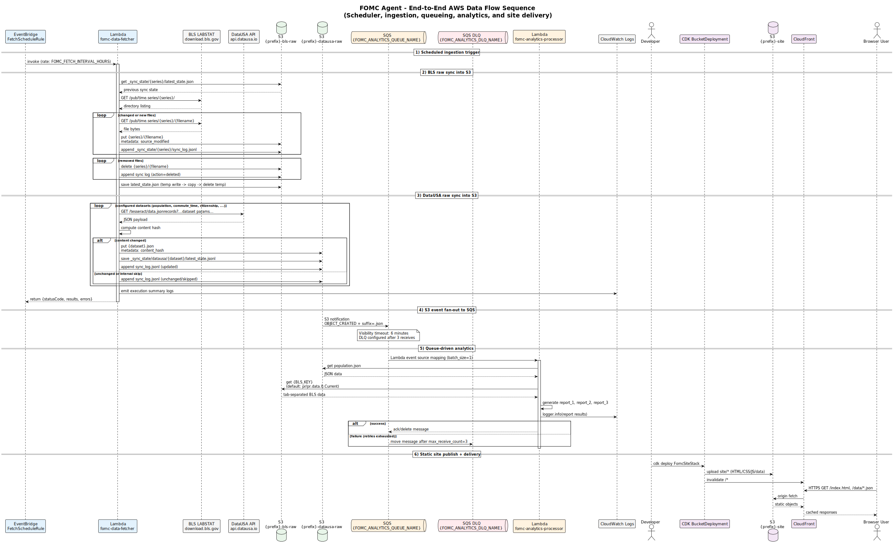
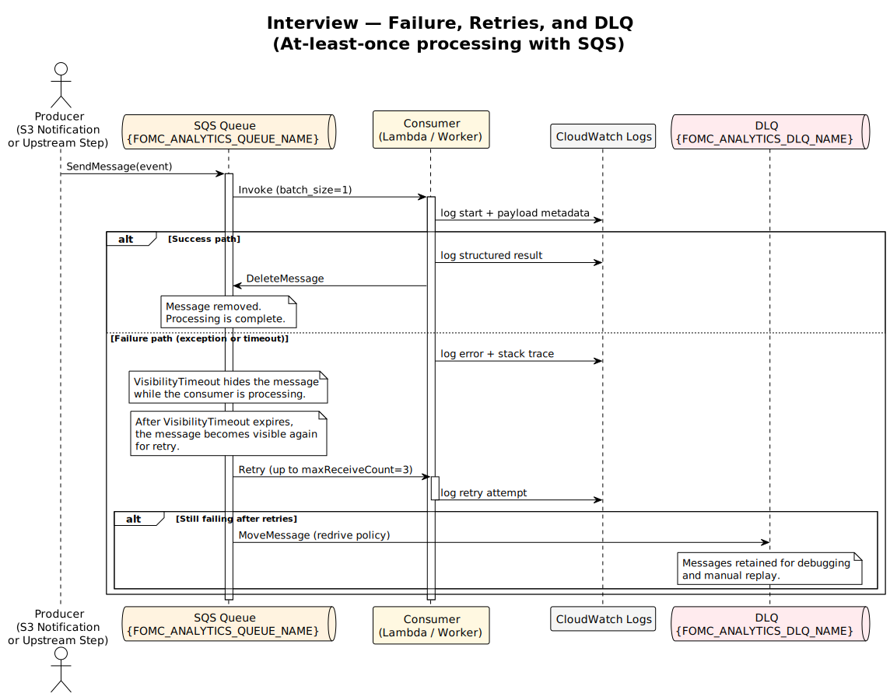
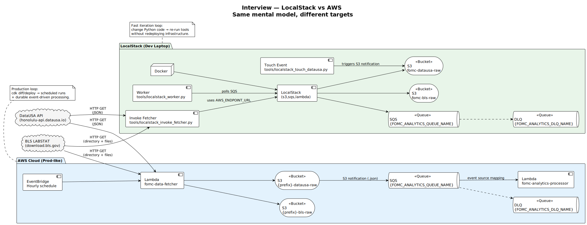

PlantUML Diagrams
Interview-ready visuals: architecture, sequence, deployment, failures, and alternatives.
How to regenerate
These SVGs are generated from PlantUML (.puml) sources.
# from repo root:
mkdir -p site/diagrams site/puml
cp docs/*.puml docs/interview/*.puml site/puml/
plantuml -tsvg docs/*.puml -o ../site/diagrams
plantuml -tsvg docs/interview/*.puml -o ../../site/diagramsTip: open the .puml sources in docs/ to customize labels for your interview.
Gallery
Click “Show source” to view the PlantUML that generated each diagram.
Stack Architecture (CDK)

Show source
Loading…Interview: System Context

Show source
Loading…Interview: Containers / Components

Show source
Loading…End-to-End Sequence
Show source
Loading…Interview: Data Model

Show source
Loading…Interview: Failure & Retry (SQS + DLQ)
Show source
Loading…Interview: Orchestration

Show source
Loading…Interview: LocalStack vs AWS
Show source
Loading…